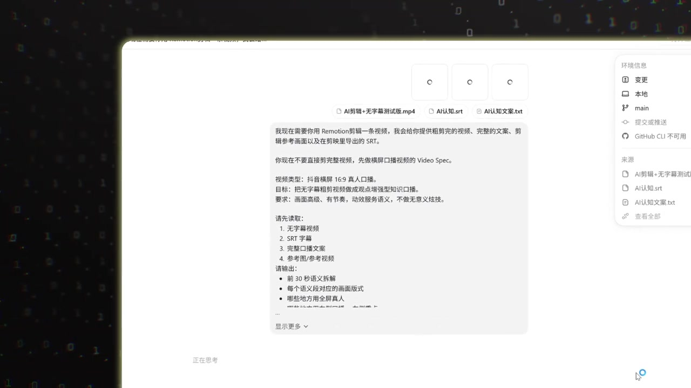
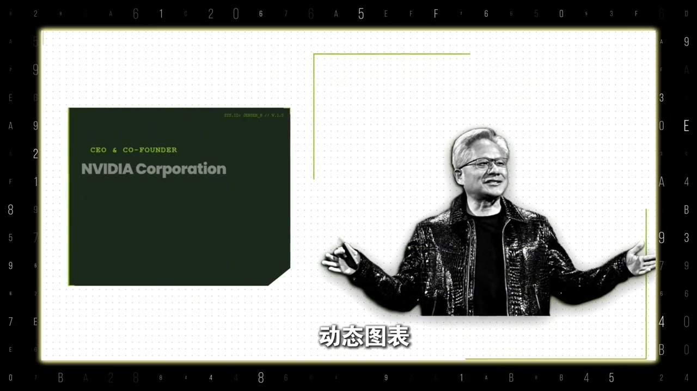

不是工具突然变聪明，而是方法改对了
这是一条面向“AI 新手村”的剪辑实操视频。讲述者用 Codex（在他的流程里更像会写 Remotion 代码的剪辑助理）展示信息卡、高级感字幕和跟着口播弹出的图标动效，并声称这套方法已经能承接约 70% 的剪辑工作：气口、字幕、排版、动效全包。
说明：Whisper 固定按中文识别时，把“AI 剪辑 / 口播 / 剪映 / Video Spec / Remotion / 同一个人”等词误听成“AA 剪辑 / 口薄 / 剪用 / Vidiu Spike / 惹魔神代码 / 台湾一个人”等。下文叙事以可见字幕与界面截图为准，文末转录区仍完整保留全部原始分段。
先看差距，再给结论
视频一开始并排对比：两个月前用 Codex 剪的效果，和现在用 Codex 剪的效果。讲述者问“同一个人为什么差距这么大”，立刻给出结论——不是它突然变聪明，而是自己终于搞懂：AI 剪辑根本不是网上说的“一句话就能出满意成片”。
“先说结论：不是它突然变聪明了，而是我终于搞懂了——AI 剪辑根本不是网上说的一句话就能出满意成片。” — 约 00:06–00:11
他指着当前成片里的信息卡、高级感字幕，以及跟着口播蹦出来的图标动效，说这些全是改对方法之后由 Codex 自己做出来的；而这些动效包装，恰恰是传统剪辑里最难、最耗时的部分。
随后他预告：会把最近半个月实操 AI 剪辑的完整流程一步不漏拆开，看完就知道该让 Codex 做什么、怎么调效果、怎么剪成自己的风格。
第一次失败：让它同时猜四件事
讲述者复盘第一次尝试：直接把口播丢进去，说“加点高级动效，帮我剪出成片”。结果画面和口播对不上，卡片重点也完全错。他一度以为是 Codex 不行，后来才反应过来——自己等于让它同时猜四件事：内容重点、画面形式、用什么素材，以及自己的审美。
“你不给剪辑师任何的信息，就让他交出成片，他也只能瞎猜，然后给你一个最普通的版本。” — 约 00:50–00:55
它是会写 Remotion 的剪辑助理，不是读心的剪辑师
这里给出整条视频的关键认知：Codex 不是剪映那种传统剪辑软件。在他的流程里，它更像“会写 Remotion 代码的剪辑助理”——卡片、图表、转场都可以按规则精准执行；但它不知道你心里的“高级”长什么样，也不知道哪句话该配什么画面。让它自由发挥，就等于纯抽卡。
这是讲述者基于个人工作流的角色定义，不是对所有 AI 剪辑产品的统一规格说明。
那怎么做出满意效果？他总结了三步，三步只有一个目的：把脑子里的判断，变成一张 AI 真正能看懂的“视频施工图”。
先别让它剪，先要一份 Video Spec
第一步：先别让它剪。先给它粗剪视频、完整文案和参考画面；字幕最好在剪映里导出 SRT，因为带时间线的字幕 AI 更容易理解。然后让它输出一份 Video Spec——也就是视频剪辑执行说明书：哪句真人全屏、哪句上卡片、哪句放大字、哪里要补录屏和真实素材，全部限定死。
- 输入：粗剪视频 + 完整文案 + 参考画面 + 剪映导出的 SRT
- 输出：Video Spec（语义拆解、画面布局、素材类型）
- 作用：这一步看着还没开剪，却直接决定后面会不会返工

可见界面要求：先做 Video Spec；输出前 30 秒语义拆解、对应画面布局，以及哪些段落用真人全屏。
只剪 30 秒，本地预览再 battle
第二步：让它先只剪辑 30 秒，目的是测效果。打开本地预览，检查人物有没有被挡住、卡片和口播有没有对上、字幕清不清楚、节奏对不对。你只改 30 秒；如果全片都按这个逻辑走，改的就是整条片。哪里不满意直接让它改——通常 battle 两三次，效果基本就稳了。
别再说“高级一点”，给参考图让它复刻
第三步被他称作做出真正高级感动效的关键：别再跟 AI 说“高级一点、再酷一点”——这种话几乎没用。他举例：某个动效是用一张图片让 Codex 复刻出来的；需求和参考图都讲清楚了，它才真正知道你要什么。
人做判断，AI 做执行；经验要沉淀成 skill
他补了一句实话：网上一堆人吹嘘 AI 自动做视频、自动出文案；可现实是，招个新员工都得做 SOP 培训，何况是 AI。如果你的视频需要截图、真实案例、演示片段，这些 Codex 替你补不了；但像气口压缩这种机械活，可以设定规则、先出一版再人工检查。
AI 最擅长的是信息卡、动态图表、画面排版和动效封装。说白了：人负责内容判断和审美，AI 负责把这些判断快速执行出来。

“所以我对 AI 剪辑最大的改观，不是一句话自动出片，而是你能给自己搭一条视频生产线。” — 约 02:37–02:43
满意的动效、卡片、Video Spec 规则都可以不断沉淀；一条视频调好之后，别让经验只用一次——沉淀成专属 skill，下一条就能复用结构、自动避开上一条踩过的坑。片尾他表示提示词和模板已整理好，并自称“一只专场”，只研究 AI 怎么真正帮你干活。
顺着视频带走的流程
粗剪 + SRT + 参考图 → 先出 Video Spec → 只剪 30 秒本地预览并改两三次 → 用参考图要动效 → 把稳定规则沉淀成可复用 skill。这是一条操作生产线，不是“一句话成片”的神话。